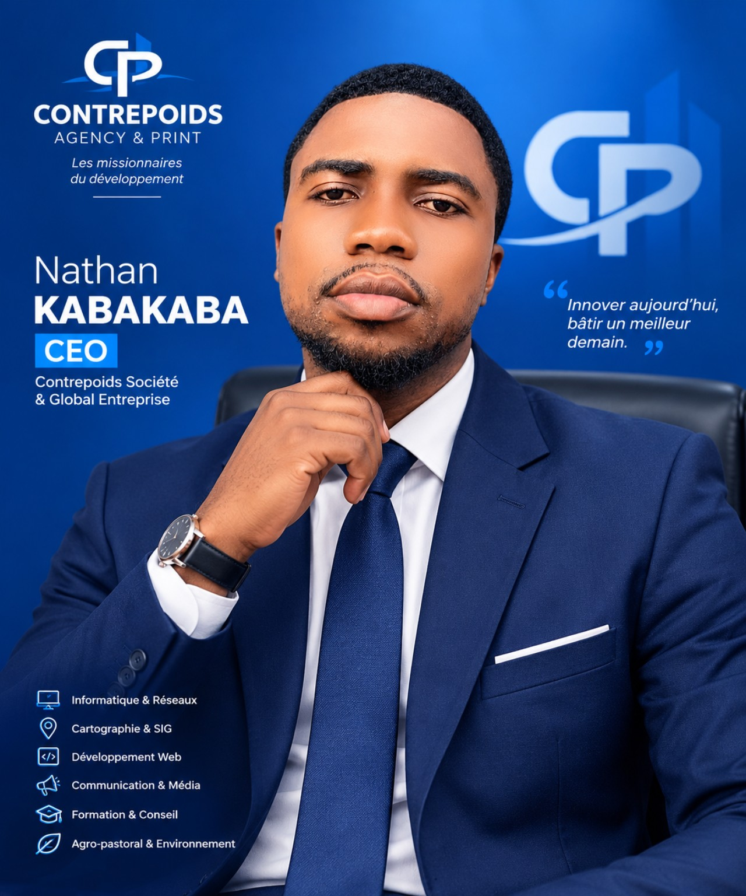

Informatique & réseaux
Administration des réseaux, systèmes informatiques, assistance technique et solutions numériques adaptées aux besoins.
Je suis Nathan KABAKABA, CEO de Global Entreprise et de Contrepoids Société. J’associe technologie, créativité et solutions concrètes pour accompagner les projets et les organisations.

Une approche multidisciplinaire, orientée vers les résultats, l’innovation et l’impact durable.
Mon parcours relie l’informatique, la collecte et l’analyse de données, les systèmes d’information géographique et la conception numérique. J’aime transformer les besoins en solutions utiles, accessibles et bien conçues.
En tant que CEO de Global Entreprise et de Contrepoids Société, je porte une vision centrée sur l’expertise, l’innovation technologique et le développement.
Des outils numériques aux plans architecturaux, je mobilise des compétences variées pour accompagner vos idées et vos projets.
Administration des réseaux, systèmes informatiques, assistance technique et solutions numériques adaptées aux besoins.
Cartographie terrain, traitement de données géographiques et valorisation de l’information spatiale.
Conception de formulaires, enquêtes, collecte mobile et gestion des données avec KoboToolbox et ODK.
Organisation, nettoyage et analyse de données pour faciliter le suivi et la prise de décision.
Création de sites web modernes, interfaces responsives et expériences numériques simples à utiliser.
Conception de plans, modélisation architecturale en 3D et visualisation de projets d’aménagement.
Création de contenus et supports visuels pour présenter les marques, services et projets avec impact.
Coordination de projets, recherche de solutions et mise en œuvre d’idées orientées vers les résultats.
Quelques exemples de réalisations et de services que je peux développer ou accompagner. Les visuels ci-dessous illustrent les domaines d’intervention.
Installation, organisation et amélioration d’environnements informatiques pour faciliter le travail au quotidien.
Parlons de votre besoin ↗Cartes thématiques et données géographiques pour visualiser un territoire ou appuyer un projet.
Parlons de votre besoin ↗Formulaires numériques, structuration des données et appui au processus de collecte sur le terrain.
Parlons de votre besoin ↗Représentation de concepts architecturaux pour mieux comprendre l’espace et présenter une idée.
Parlons de votre besoin ↗Présence en ligne claire et responsive pour les entreprises, associations et initiatives.
Parlons de votre besoin ↗Structuration et présentation des données pour rendre l’information plus lisible et exploitable.
Parlons de votre besoin ↗Chaque collaboration commence par l’écoute et se construit autour d’objectifs clairs.
Nous clarifions votre objectif, vos contraintes et les résultats attendus.
Je définis une approche adaptée, avec des outils et une présentation cohérents.
Nous avançons vers une solution pratique, soignée et pensée pour durer.
Vous avez un projet en informatique, cartographie, collecte de données, développement web ou dessin architectural 2D/3D ? Contactez-moi pour en discuter.